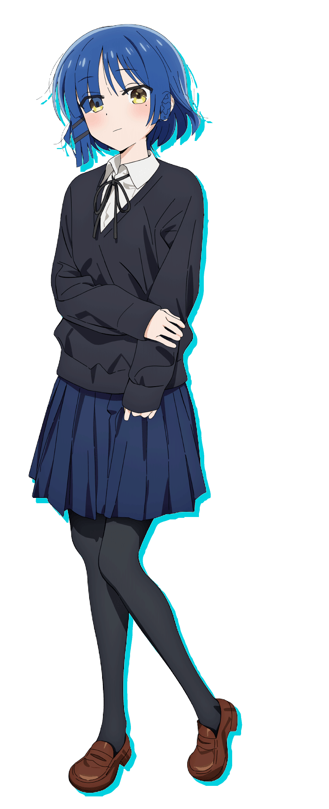
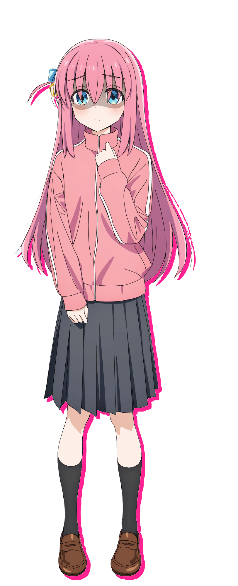
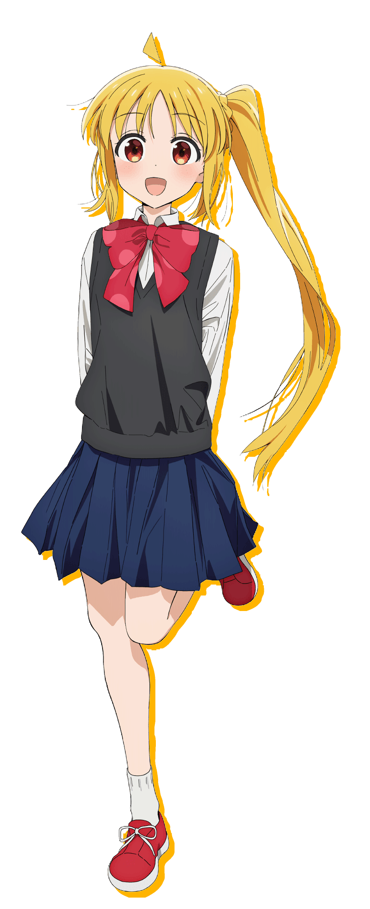

IkuyoKita
A bright and popular first-year high school student, responsible for playing the guitar and providing vocals for Kessoku Band. Her cheerful personality encourages her to engage with people easily, always approaching them with a welcoming smile, even upon their first encounter. She greatly admires Ryo, sometimes allowing her feelings to overwhelm her. She frequently takes photos and uploads them to Isosta.

RyoYamada
A cool and solitary second-year high school student. She is the bassist of Kessoku Band and Nijika's best friend. Her hobbies are out of the ordinary, and she rejoices when called a weirdo. She lives with a wealthy family but never has any money because she spends it all on instruments. She occasionally eats weeds to get rid of her hunger.

HitoriGotoh
An extremely timid and introverted first-year high school student responsible for playing the lead guitar in Kessoku Band. Her aspiration to showcase the talent of reserved individuals motivated her to start playing the guitar. Despite possessing genuine skill, she grapples with effectively demonstrating it within the band or in front of an audience. Moreover, she has a habit of saying 'Ah' before speaking.
